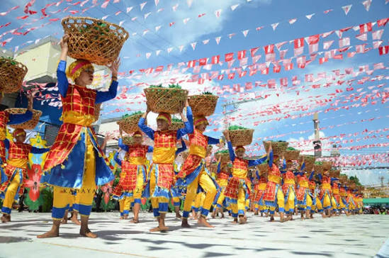

Festivals & Celebrations
- Feast of the Black Nazarene in Manila
- Chinese New Year celebrations in Binondo
- Flores de Mayo and other religious traditions
- City fiestas and community celebrations
Before Spanish colonization, communities around Manila Bay and the Pasig River were important centers of trade. Their location helped connect local communities with merchants from other parts of Asia.
During Spanish rule, Manila became a major colonial center. Intramuros was built as a fortified settlement, and churches, government buildings, and other structures shaped the city's development.
Over time, Manila and nearby cities grew into a major center of government, education, business, and culture. Today, the National Capital Region brings together different communities and traditions while continuing to develop as a modern metropolitan area.

Celebrate the traditions and creativity found throughout NCR.



Learning about history and culture helps us appreciate the people, traditions, and experiences that shaped the Philippines. Visitors can help preserve this heritage by respecting historical sites and local customs.